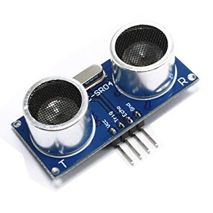
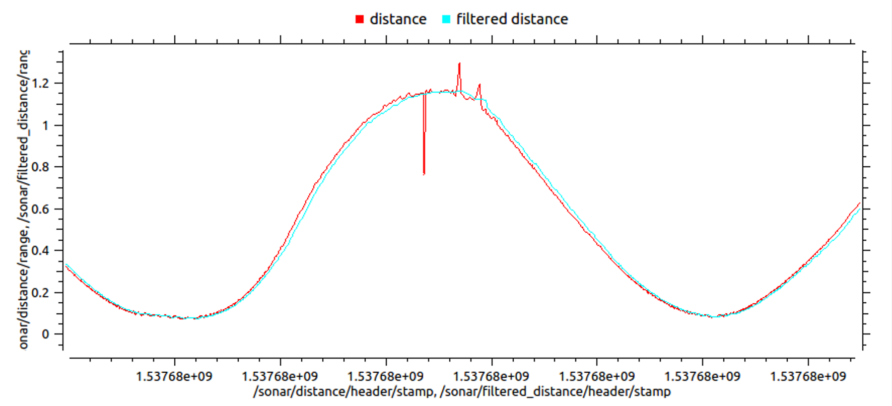
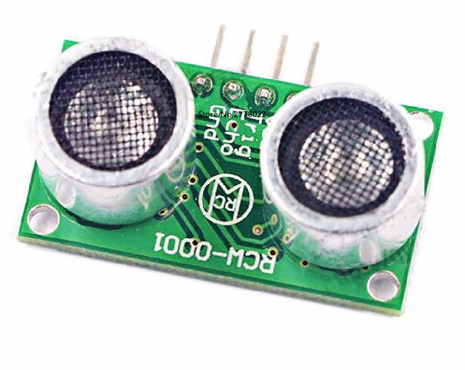

Дальномер HC-SR04
Ультразвуковой дальномер («сонар») — это датчик расстояния, принцип действия которого основан на измерении времени распространения звуковой волны (с частотой около 40 кГц) до препятствия и обратно. Сонар может измерять расстояние до 1,5–3 м с точностью до нескольких сантиметров.

Установка
Дальномер закрепляется к корпусу с помощью двухстороннего скотча. Для получения приемлемых результатов необходимо использование виброразвязки. В качестве виброразвязки можно использовать кусок поролона.
Подключение
Подключите HC-SR04 к OPi согласно схеме подключения. Используйте резисторы на 1,0 и 2,2 кОм и любые свободные GPIO-пины, например 23 и 24:
Подсказка Вместо резистора на 2,2 кОм можно использовать два резистора на 1 кОм, соединенные последовательно.
Подсказка На OPi есть несколько взаимозаменяемых пинов GND и VCC 5V. Используйте распиновку, чтобы найти их.
Чтение данных
Чтобы считать данные с дальномера HC-SR04, используется библиотека для работы с GPIO – pigpio. Эта библиотека предустановлена на образе Technic.
Для работы с pigpio необходимо запустить соответствующий демон:
sudo systemctl start pigpiod.service
Вы также можете включить автоматический запуск pigpiod при старте системы:
sudo systemctl enable pigpiod.service
Таким образом становится возможным взаимодействие с демоном pigpiod из языка Python:
import pigpio
pi = pigpio.pi()
Подсказка См. подробное описание Python API в документации
pigpio.
Пример кода для чтения данных с HC-SR04:
import time
import threading
import pigpio
TRIG = 23 # пин, к которому подключен контакт Trig дальномера
ECHO = 24 # пин, к которому подключен контакт Echo дальномера
pi = pigpio.pi()
done = threading.Event()
def rise(gpio, level, tick):
global high
high = tick
def fall(gpio, level, tick):
global low
low = tick - high
done.set()
def read_distance():
global low
done.clear()
pi.gpio_trigger(TRIG, 50, 1)
if done.wait(timeout=5):
return low / 58.0 / 100.0
pi.set_mode(TRIG, pigpio.OUTPUT)
pi.set_mode(ECHO, pigpio.INPUT)
pi.callback(ECHO, pigpio.RISING_EDGE, rise)
pi.callback(ECHO, pigpio.FALLING_EDGE, fall)
while True:
# Читаем дистанцию:
print(read_distance())
Фильтрация данных
Для фильтрации (сглаживания) данных и удаления выбросов может быть использован фильтр Калмана или более простой медианный фильтр. Пример реализации медианной фильтрации:
import collections
import numpy
# ...
history = collections.deque(maxlen=10) # 10 - количество сэмплов для усреднения
def read_distance_filtered():
history.append(read_distance())
return numpy.median(history)
while True:
print(read_distance_filtered())
Пример графиков исходных и отфильтрованных данных:

Исходный код ROS-ноды, использовавшейся для построения графика можно найти на Gist.
Дальномер RCW-0001

Ультразвуковой дальномер RCW-0001 совместим с дальномером HC-SR04. Используйте инструкцию выше для подключения и работы с ним.
Полет
Пример полетной программы с использованием simple_offboard, которая заставляет коптер лететь вперед, пока подключенный ультразвуковой дальномер не задетектирует препятствие:
set_velocity(vx=0.5, frame_id='body', auto_arm=True) # полет вперед со скоростью 0.5 мс
while True:
if read_distance_filtered() < 1:
# если препятствие ближе, чем в 1 м, зависаем в точке
set_position(x=0, y=0, z=0, frame_id='body')
rospy.sleep(0.1)